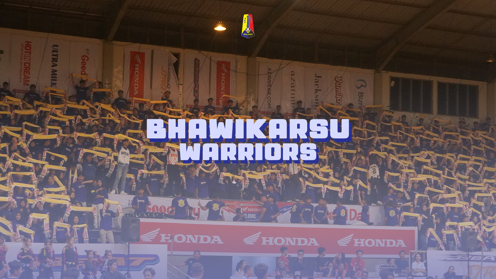
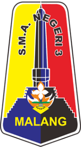
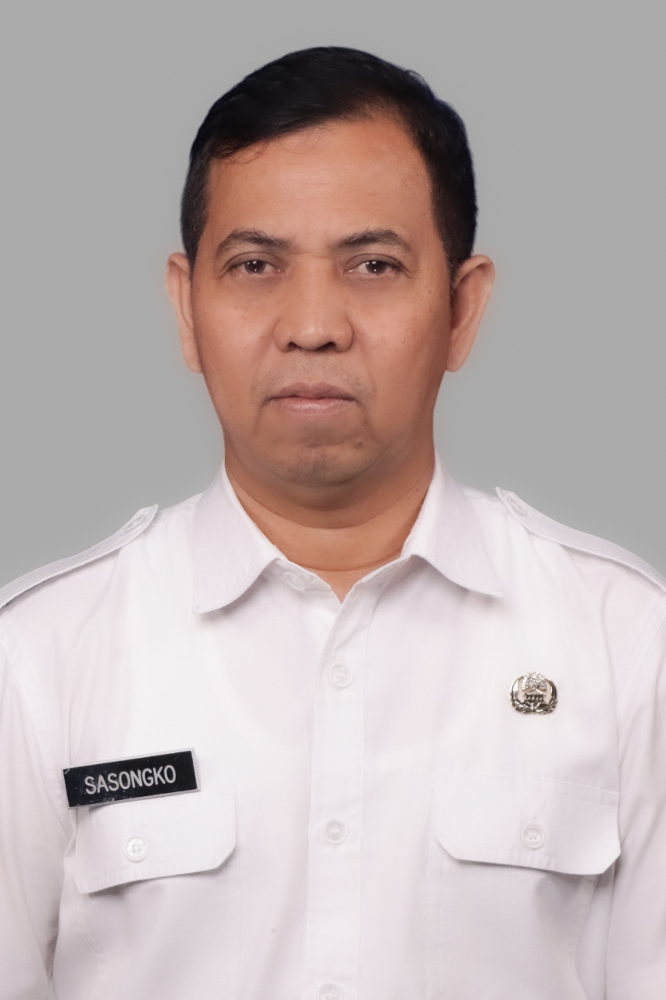

SMA Negeri 3 Malang

Sambutan
Kepala Sekolah SMAN 3 Malang
Assalamualaikum warahmatullahi wabarakatuh
Puji Syukur dipanjatkan kepada Allah SWT, atas limpahan rahmat dan hidayahnya kepada kita semua, sehingga kita bertemu dalam media informasi SMA Negeri 3 Malang dalam kondisi sehat dan baik.
Kemajuan teknologi informasi dan komputer tumbuh dan berkembang dengan pesat beberapa dekade terakhir. Kondisi ini tentunya memberikan dampak positif dalam kehidupan manusia. Kemudahan yang sangat dirasakan oleh kita adalah kecepatan akses informasi global. Peristiwa atau kejadian terkini di seluruh belahan bumi, akan dengan mudah diketahui oleh sebagian besar umat manusia dengan mengakses aplikasi informasi di internet. Website ini ada sebagai media strategis dalam memberikan kemudahan bagi kita untuk memperoleh informasi pelayanan Pendidikan serta aktivitas dan prestasi di SMA Negeri 3 Kota Malang. Pejuang Bhawikarsu sebagai warga sekolah akan dapat memberikan informasi aktivitas yang dilakukan, karya dan prestasi yang dicapai dan mendorong seluruh warga sekolah untuk bersemangat menampilkan kinerja unggul sebagai tekad mewujudkan kualitas Pendidikan di SMA Negeri 3 Malang. Akhirnya, semoga website ini dapat memberikan manfaat bagi kita semua dalam memberikan informasi Pendidikan yang berkualitas di SMA Negeri 3 Malang.
Wassalamualaikum warahmatullahi wabarakatuh
Dr. Sasongko, S.Pd., M.M.
VISI
Terwujudnya insan unggul yang cerdas, berkarakter, berbudaya lingkungan, dan berperan aktif di era global.
MISI
- Membudayakan iklim sekolah yang religius dan bermartabat melalui kegiatan keagamaan.
- Mengembangkan karakter positif, yaitu: jujur, tanggung jawab, toleran, peduli sesama, gemar berbagi, cinta tanah air, kolaboratif dan reflektif.
- Mengembangkan budaya hidup sehat.
- Mengembangkan sikap mandiri, kritis, kreatif, dan komunikatif melalui kegiatan intrakurikuler, ekstrakurikuler, dan kokurikuler.
- Meningkatkan proses pembelajaran agar dapat mengembangkan peserta didik yang unggul dalam ilmu pengetahuan dan teknologi dengan memanfaatkan kemajuan teknologi informasi.
- Menerapkan manajemen partisipatif dengan melibatkan seluruh warga sekolah, orang tua/komite dan masyarakat.
- Menciptakan sekolah yang aman, nyaman dan inklusif melalui kegiatan intrakurikuler maupun ekstrakurikuler.
- Membudayakan lingkungan sekolah rapi, bersih dan sehat.
- Melestarikan lingkungan dan mencegah terjadinya kerusakan lingkungan.
- Meningkatkan kemampuan literasi, numerasi, dan penguasaan bahasa asing untuk menjawab tantangan global.
- Meningkatkan pembelajaran yang menumbuhkembangkan potensi dan prestasi warga sekolah yang unggul dan mampu bersaing baik di tingkat lokal, nasional maupun internasional.